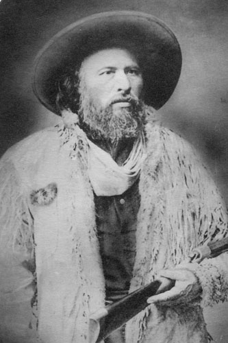

"My people will sleep for one hundred years, but when they awake, it will be the artists who give them their spirit back."
In her seminal work 'Halfbreed', Campbell explores the profound isolation of living between two worlds, challenging the systemic erasure of Métis identity.
"I was a halfbreed, and that meant I was nothing. I was not white, and I was not Indian."

BATOCHE, SASKATCHEWAN
"Tant que nous aurons une goutte de sang français et indien..."
As a master scout and military strategist, Dumont's identity was forged in the fusion of two cultures.